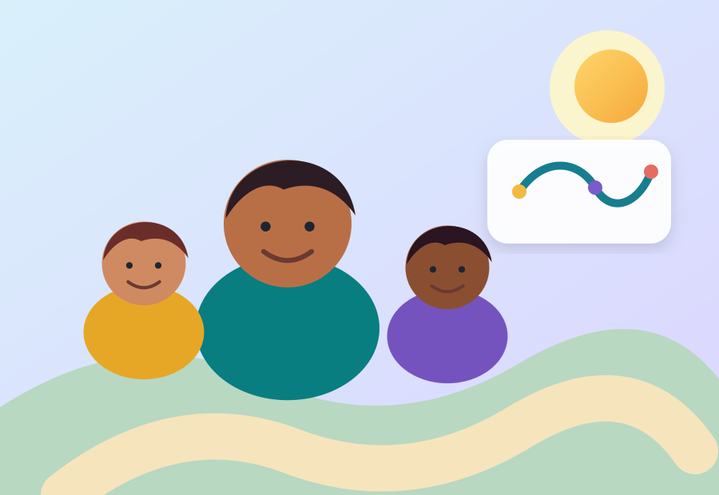

🎮 Jornada interativa • 20–25 min
Desmistificando a Bipolaridade
Acompanhe Rafa, Bia e Dra. Maya. Você vai interpretar situações, separar mitos de informações confiáveis e construir um plano de cuidado.
6 capítulosDo diagnóstico à rede de apoio.
18 decisõesCasos curtos com feedback imediato.
Aprender > acertarO erro vira revisão, não punição.
Importante. Este material é educativo. Não realiza diagnóstico, não substitui atendimento profissional e não orienta mudanças de medicação.